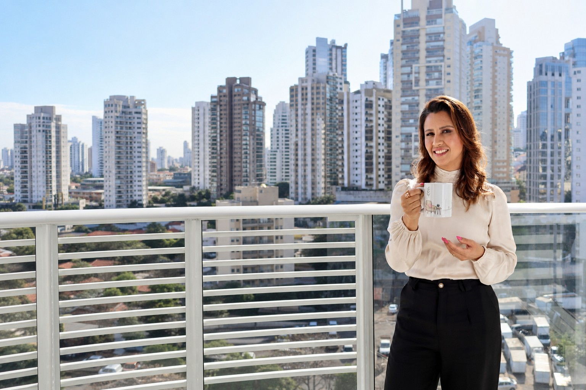

Atendimento individual online
Um espaço para olhar com mais atenção para sua história, relações, escolhas e o momento que você está vivendo.
Conhecer o atendimento
Sobre
Antes de trabalhar com desenvolvimento humano, eu já era profundamente interessada por pessoas.

Desde muito jovem, eu queria entender o que existia por trás das escolhas, comportamentos e relações.
Por que somos como somos? O que a nossa história tem a ver com quem nos tornamos?
Naquela época, eram perguntas.
Hoje, elas fazem parte do meu trabalho.
Minha trajetória passou pela Radiologia, por hospitais e centros cirúrgicos, pelo ambiente empresarial, pelo casamento e pela maternidade.
Tornei-me mãe de Maria Clara, Théo e Amora e, durante alguns anos, dediquei grande parte da minha vida à família e aos negócios.
Eu ocupava muitos lugares.
Até perceber que, no meio de tantos papéis, também precisava voltar a olhar para mim.
Foi esse movimento que aprofundou meu interesse pelo comportamento e desenvolvimento humano e me levou a buscar estudos e formações para transformar algo que sempre esteve presente em mim em uma atuação profissional.
Atuo como terapeuta e palestrante e sou graduanda em Psicologia.
Nos atendimentos individuais, encontro histórias, relações, conflitos, escolhas e diferentes momentos da vida.
Nas palestras, levo essas conversas para empresas, escolas e grupos.
Em contextos diferentes, existe algo que permanece:
meu interesse não está apenas no que uma pessoa está vivendo, mas em compreender o que existe por trás disso.
Tudo isso participa da maneira como nos enxergamos, nos relacionamos e ocupamos nossos lugares no mundo.
Por isso, minha forma de trabalhar parte de um olhar para a pessoa dentro do seu contexto.
Sem respostas prontas para histórias diferentes.
Com escuta, presença, clareza e uma comunicação direta.
O trabalho
Um espaço para olhar com mais atenção para sua história, relações, escolhas e o momento que você está vivendo.
Conhecer o atendimentoConversas sobre desenvolvimento humano, comportamento e relações conectadas à realidade de cada organização.
Palestras para empresasEncontros desenvolvidos para alunos, famílias e educadores a partir das necessidades de cada instituição.
Palestras para escolasA curiosidade que começou muito cedo encontrou um caminho. Hoje, ela é parte de quem eu sou, do que estudo e do trabalho que escolhi construir.
Conheça meu trabalhoInformações profissionais
Thais Lourenço